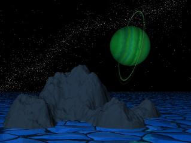
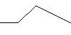
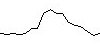

Un aperçu
La
génération d'une
image de relief
Pourquoi Geomorph?
Une feuille de route?
Pour
être informé des nouvelles versions
Geomorph est un générateur et un éditeur
d'images de relief ("height fields", "height maps") fonctionnant sous
Linux.
Une image de relief est une projection en 2 dimensions d'un terrain
en 3 dimensions, ou en quelque sorte une carte topographique
artificielle.
Geomorph génère des images carrées et montre un aperçu en perspective des terrains correspondants. Ces images peuvent être traitées à l'aide d'un logiciel d'illumination comme Povray ("renderer") pour créer des paysages réalistes.
Exemple:
| Image de relief |
Aperçu |
Rendu Povray |
| |
|
 |
Voyez aussi la galerie
Geomorph.
Les scènes Povray utilisées pour créer les
paysages de la partie de la gallerie faite par l'auteur sont incluses
dans le logiciel distribué.
Geomorph est en version alpha et est localisé en français, en anglais et en allemand. Voici des captures d'écran. Le logiciel est généralement stable.
Ses principales fonctionnalités sont, pour l'instant:
La documentation de Geomorph est
constituée des tutoriels et des guides de ce site web.
La génération d'une
image de relief
Geomorph crée des images de relief en déformant une
surface de façon aléatoire, à des échelles
de plus en plus petites.
Partons par exemple d'une surface uniforme de 512x512 pixels. Dans
une
première étape, le centre de la surface est
déplacé d'une altitude choisie au hasard, un peu comme un
drap étiré par pincement. Dans une seconde étape,
cette surface est subdivisée en 4, et le centre de chacune de
ses surfaces est déplacé de façon aléatoire
vers le haut ou vers le bas. Dans une troisième étape,
chacune des 4 surfaces est subdivisée à nouveau en
4, pour un total de 16 surfaces, qui sont à leur tour
étirées par le milieu, et ainsi de suite, jusqu'au niveau
du pixel.
Voici une illustration d'une tranche prise dans une telle surface:
| Étape
1 |
Étape
2 |
Étape
3 |
Étape
4 |
 |
 |
 |
 |
Habituellement, contrairement à cet exemple, la surface est
lissée à chaque étape (pensez au pincement du
drap).
Cette approche dite par "subdivision" n'est pas unique à
Geomorph, elle est couramment utilisée pour
générer des reliefs artiticiels. L'application du
même processus de déformation à différentes
échelles donne une surface dite "auto-similaire" qui
présente une dimension fractionnaire (ou fractale),
c'est-à-dire, dans le cas qui nous intéresse, entre 2 et
3.
Geomorph propose aussi une variante de cette approche, consistant
à additionner des surfaces à une surface de base à
des échelles de plus
en plus petites. Les surfaces ajoutées sont
dérivées d'une surface primitive,
généralement une cloche gaussienne, ou
de toute image choisie par l'utilisateur.
Pourquoi Geomorph?
Geomorph répond à mon propre besoin de création de
paysages articiels sous Linux, à des fins esthétiques.
Les outils disponibles
au moment où j'ai pris la décision d'entreprendre ce
projet (fin 2000, je crois),
n'étaient pas satisfaisants, soit par manque de
stabilité, soit par manque de fonctionnalités.
La création de paysages artificiels est motivée, entre
autres, par un intérêt pour la
biosphère et pour les processus qui la font évoluer.
C'est un peu pour moi une extension de la photographie.
Le développement d'un logiciel est aussi une activité
créatrice valorisante.
Nous sommes encore dans l'enfance de la création artistique
par des outils numériques. Il est encore possible, et parfois
nécessaire, de développer ses propres outils, un peu
comme les peintres du Moyen Âge ou de la Renaissance qui
créaient leurs propres
pigments.
J'ai déjà plusieurs idées en attente de
réalisation, répondant à des besoins précis
de création de paysages. En voici quelques-unes en vrac (sans
promesse de réalisation!):
Contact: Patrice St-Gelais